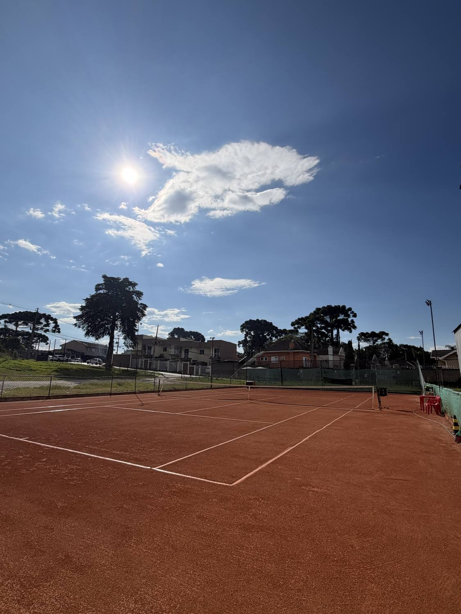
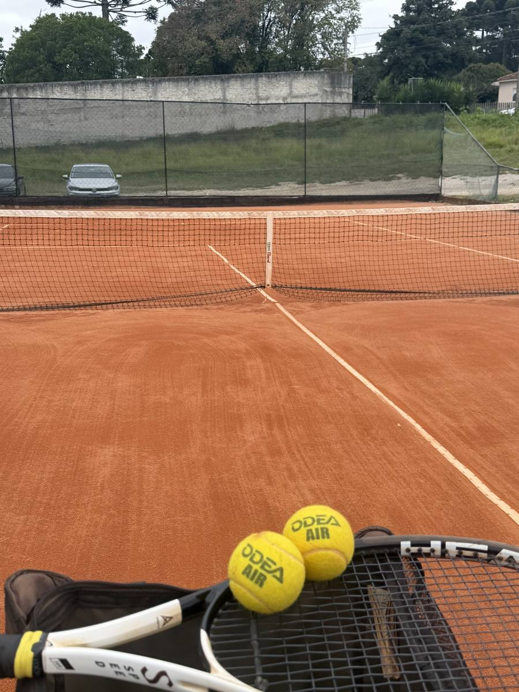

O método que começa nos pés — e leva você do primeiro contato com a quadra até o jogo que não desmonta na pressão.
Academia JV Tênis · saibro em Santa Felicidade
A aula tradicional começa pela raquete: “segura assim, gira, bate”. Funciona enquanto a bola vem mansa. Quando o tênis vira jogo, aquela técnica ensaiada na cesta desmonta — e a conclusão errada é sempre a mesma: “não levo jeito”.
O golpe é a parte visível. O erro está três elos antes — nos pés.
Primeiro os pés e a base. Depois a movimentação. Depois o posicionamento. E só então a batida — aprendida com o corpo no lugar certo, no tempo certo.
“O tênis se aprende de baixo pra cima. Na base e nos pés, na movimentação e no posicionamento — antes da batida e dos fundamentos.”
A Pirâmide diz o que se ensina. A Trilha diz para quem. O calendário diz quando. Junto, isso responde o que quase nenhuma academia responde: o que exatamente vai acontecer nas suas próximas 12 aulas.
O conteúdo: seis camadas empilhadas de baixo pra cima. Nenhuma recebe conteúdo novo antes de a de baixo sustentar.
O seu lugar: cinco níveis, do primeiro contato ao competitivo — com régua objetiva. Avança quem cumpre o critério, não quem faz tempo que treina.
O tema do mês: seis temas que rodam duas vezes por ano. A academia inteira gira em torno do foco do mês, cada aluno na sua intensidade.
Toda aula tem a mesma espinha dorsal, em quatro blocos. O que muda é o tema do mês e a intensidade do seu nível.
Pés, split-step e mini-troca. Aquecimento que já é conteúdo — nunca “correr em volta da quadra”.
O tema do mês, do simples ao complexo. Uma correção por vez, começando pela mais baixa da cadeia.
O mesmo tema dentro de ponto valendo, com regra dirigida. Técnica que não vira jogo é coreografia.
Você diz em uma frase o que levou da aula. O professor conecta com a próxima.

Pé antes de braço. Quando a chegada melhora, o golpe fica fácil.
Sai de cada aula sabendo o que evoluiu — e por quê.
Avança quem cumpre o critério, com número na mão. Não é achismo.
Jogo adaptado ao que você já sustenta: bola mais lenta, quadra menor, regra simples.
Técnica construída sobre base não desmonta na hora do jogo.
Barragem interna com grupos, do iniciante ao avançado. Sempre existe um próximo degrau.
Começa aprendendo a estar em quadra — e joga já na primeira aula, num jogo do tamanho da sua base.
Reconstrói a base e destrava o que não evoluía. É o público que o método atende melhor.
A mesma Trilha na linguagem da idade: tudo vira jogo, com bola, raquete e quadra adaptadas.
Refinamento fino, padrões próprios de construção de ponto e cabeça de jogo sob pressão.
Se você procura só bater bola, sem método nem sequência, provavelmente não é aqui.
Qual é o meu nível?Apostila própria, construída aula após aula no saibro — não é manual copiado.
O piso que cobra apoio e equilíbrio. Quem aprende a se apoiar nele, se apoia em qualquer quadra.
Particular, Dupla, Trio, Quarteto e Kids. O nível é do aluno, não da turma.
Remarcação com regra clara e prazo definido. Aula paga não vira aula perdida.
Agenda, presença e pagamento no celular. Organização que você vê.
Torneio interno com grupos, do iniciante ao avançado. Sua evolução tem régua e tem palco.
A parte física conversando com a fase do seu treino — prevenção e potência de pernas.
Sim — e é justamente o melhor jeito de começar. O nível Base existe para isso: você aprende a estar em quadra antes de aprender a bater, com bola adaptada e quadra reduzida.
Não na primeira aula: a gente empresta. Depois ajudamos você a escolher a raquete certa para o seu jogo — não a mais cara.
Você joga na primeira aula. O jogo é adaptado ao que a sua base já sustenta: bola mais lenta, quadra menor e regra simplificada. Jogo de verdade, do seu tamanho.
Pela régua de troca de bola e pela ficha de avaliação — com números, não com opinião. Cada nível tem critério objetivo de avanço, e você sabe qual é o seu.
Você escolhe: Particular, Dupla, Trio, Quarteto ou Kids. Em qualquer formato, o nível é do aluno, não da turma: o mesmo tema roda em intensidades diferentes.
Existe o Sistema Flex, com regra de remarcação clara e prazo definido. A regra é combinada antes, para não virar discussão depois.
Sim. A mesma Trilha na linguagem da idade: tudo em forma de jogo e história, blocos curtos de atenção e coordenação geral como conteúdo. Regra de ouro: a criança sai querendo voltar.
Marque uma aula de avaliação: a gente mede o seu nível, você entende a Trilha e sai sabendo exatamente qual é o próximo passo.
Marcar aula de avaliação
Rua João Azolin, 795 — Santa Felicidade, Curitiba/PR
WhatsApp (41) 99541-5712 · @joaovictortenis